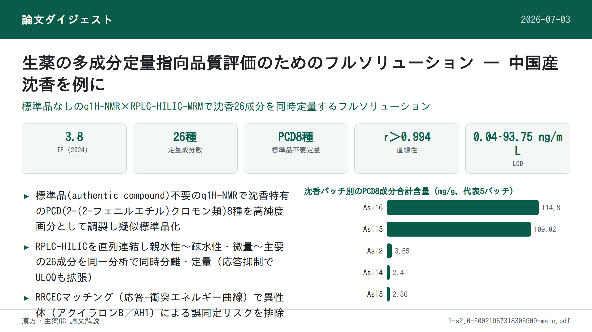

生薬の多成分定量指向品質評価のためのフルソリューション — 中国産沈香を例に

<!-- 方針: ほぼ全訳＋必要に応じた補足。原文の節立て（Abstract→Introduction→Experimental→Results and discussions→Conclusions）に沿って訳出。「> 補足:」は訳者注。図は本文に埋め込まれていたラスター画像が本論文と無関係の画像（別論文の図）に化けていたため取り込みを断念し、「原文参照」と明記した。 -->
書誌情報
- 標題（原題）: A full solution for multi-component quantification-oriented quality assessment of herbal medicines, Chinese agarwood as a case
- 著者・所属: Huixia Huo, Yao Liu, Wenjing Liu, Jing Sun, Qian Zhang, Yunfang Zhao, Jiao Zheng, Pengfei Tu, Yuelin Song, Jun Li（Modern Research Center for Traditional Chinese Medicine, School of Chinese Materia Medica, Beijing University of Chinese Medicine, 北京 100029, 中国）
- 掲載誌・巻号・DOI: Journal of Chromatography A 1558 (2018) 37–49. https://doi.org/10.1016/j.chroma.2018.05.018
- インパクトファクター: 約3.8（Journal of Chromatography A, JCR 2024 / Clarivate。集計元により3.8〜4.2の幅で報告されている）
- 受理経過 / ライセンス: 受領 2018-02-28 / 改訂 2018-04-17 / 採録 2018-05-08 / オンライン公開 2018-05-09。© 2018 Elsevier B.V. All rights reserved.
- キーワード: 定量1H-NMR、標準品不要定量(Authentic compound-free quantification)、オンラインパラメータ最適化、RRCECマッチング、RPLC-HILIC、中国産沈香(Chinese agarwood)
補足: 本論文は分析法開発（方法論）論文であり、対象は中国産沈香（Aquilaria sinensis 由来の樹脂含浸材、以下「沈香」）。PCD = 2-(2-フェニルエチル)クロモン類（2-(2-phenylethyl)chromone derivatives）。q1H-NMR = 定量1H-NMR。RRCEC = relative response vs. collision energy curve（相対応答-衝突エネルギー曲線）。PIT = pseudo-ion transition（擬似イオントランジション）。DP = declustering potential（脱クラスター電位）、CE = collision energy（衝突エネルギー）。ULOQ/LLOQ = 定量上限/下限。
要旨（Abstract）
生薬(HMs)の品質は、臨床でその顕著な治療効果を得るための前提条件であり、多成分（品質マーカー、Q-marker とも呼ばれる）の定量は品質評価の有効な手段として広く重視されてきた。化学的多様性のため、品質管理の実務は主に4つの技術的隘路――標準品(authentic compound)の不足、極性範囲の広さ、濃度範囲の広さ、潜在的Q-markerの信号誤認識――によって大きく阻まれている。本研究では、これらの障壁に対処するためLC–MS/MSの可能性を高める試みを行い、中国産沈香を事例として用いた。第一に、自作の分取フラクションコレクターを導入し、抽出物全体を自動的に目的画分(fractions-of-interest)の一群へと分割した。第二に、定量1H-NMR(q1H-NMR)を用いてLC–MS/MSの能力を補い、各画分の詳細な化学プロファイリングを行い、これら明確に特定された画分を、入手可能な一部の標準品と組み合わせてプールし、疑似混合標準溶液(pseudo-mixed standard solution)を作成した。第三に、LC–MS/MS測定について一連の改良を行った。逆相LC(RPLC)と親水性相互作用LC(HILIC)を直列に連結して広い極性の窓に対応し、MS/MS領域ではオンラインパラメータ最適化、応答調整(response tailoring)、およびRRCEC（相対応答-衝突エネルギー曲線）マッチングを統合して定量の信頼性を高めた。方法バリデーション後、中国産沈香中の合計26成分について同時定量を実施した。特に、8種の2-(2-フェニルエチル)クロモン誘導体については標準品を用いない定量(authentic compound-free quantification)を達成した。以上より、本戦略は中国産沈香をはじめとする生薬一般のQ-marker定量指向の品質管理における技術的障壁を完全に克服する有望な解決策である。
1. 序論（Introduction）
生薬(HMs)の化学的多様性は、多因子性疾患に対する「多成分・多標的」というユニークな治療原理を生む[1–6]一方で、その品質管理には厄介な課題をもたらす。近年、品質マーカー(Q-marker)という新しい概念が、HMsの品質評価のための実践的戦略として広く普及しており[7,8]、以後の作業は、複雑な化合物プールとして広く認識される特定のHMから、それらQ-markerの正確な定量情報を抽出するのに適した分析ツールの探求に移っている。世界中の分析科学者による大きな努力にもかかわらず、それら最先端の機器をもってしても、標準品の不足、比較的狭い極性の窓、限られた直線ダイナミックレンジ、信号誤認識といった技術的障壁に十分に対応できていない。本稿では、いくつかの適切な技術を統合することで、これらの隘路を突破する実行可能な解決策を提案する。
標準品は、応答値と濃度を変換する検量線を構築するために、LC–MS/MSをはじめとするほとんどの機器で必須である。LC–MS/MSは現在、HMs品質評価のワークホースとして機能している。しかし、必要な標準品をすべて収集することは、コストが高く労力・時間がかかり、時には不可能でさえある。幸い、定量1H-NMR分光法(q1H-NMR)は、標準品の代わりに単純な内部標準（例えばナトリウムトリメチルシリルプロピオン酸塩や4,4-ジメチル-4-シラペンタン-1-スルホン酸）を用いることで定量情報を提供できる。これは共鳴信号が理論上、共鳴核の数に直接比例するためである[9–11]。分解能・感度に関する本質的な短所を踏まえると、HM抽出物全体の1H-NMRスペクトルから各成分（特に微量成分）の定量情報を抽出することは依然として困難な課題である。しかし、NMR技術の急速な発展により、通常数十の化合物を含む比較的単純な画分については、詳細な定量分析を達成することが今や可能になっている[12]。技術発展のもう一つの恩恵として、HM抽出物全体をq1H-NMRの定量的性質に適合するまで単純化するための自動フラクションコレクターも今では利用可能である。結果として、q1H-NMRとクロマトグラフィー分画を組み合わせることは、標準品を用いない定量に対する実行可能な手段となるはずである。
半極性で豊富な成分だけでなく、一部の親水性化合物や微量成分もHM品質において重要な役割を果たすことが多い。したがって、適格な方法は、大きな濃度・極性の幅を持つ一群の標的を同時に定量する能力を備えている必要がある。妥協策として、目的化合物すべてを一次化合物クラスター、親水性化合物クラスターなどのいくつかのサブグループに分けたうえで一連の方法を開発・適用することは確かに可能であるが、極めて煩雑な作業量を要する。幸い、極性・濃度拡張定量を達成する高度なパイプラインが既に検証されている[13–15]。逆相液体クロマトグラフィー(RPLC)と親水性相互作用液体クロマトグラフィー(HILIC)を直列に連結することで、単一カラムLCと比較して保持窓と分離能を拡張し、各化合物にハイブリッドなクロマトグラフィー機構を割り当てることができる[16,17]。MS/MS領域では、テーラーメイド多重反応モニタリング(MRM)により、各分析対象物（特に主要成分）の直線範囲が、（常に最適値とは限らない）適切なパラメータを定義することで、全試料中の分布をカバーできるようになる[18,19]。さらに、オンラインパラメータ最適化は、標準品が入手できない場合でも、参加化合物に適したパラメータを得るための実用的な方法である[20–22]。
異性体、さらにはジアステレオ異性体は生薬中に広く存在するが、LC–MRMで捕捉された信号の同一性統合（identity consolidation）に注意が払われることは稀であり、ピーク誤認識の可能性を排除できていない。実際、異性体はクロマトグラフィー的にも質量分析的にも類似した挙動を示すことが多く、識別は厄介な作業である。例えば、Peucedanum praeruptorum のLC–MS/MSクロマトグラムでプラエルプトリンE(3′-アンゲロイル-4′-イソバレリルケラクトン)に以前割り当てられていたピークを採取して1H-NMR測定に供したところ、その位置異性体である3′-イソバレリル-4′-アンゲロイルケラクトンの存在が明確に判明した[23,24]。したがって、HMsにおいて排他的な定量を達成するには、より多くの構造的証拠を導入する必要がある。幸いにも、この位置異性体ペア（プラエルプトリンE vs. 3′-イソバレリル-4′-アンゲロイルケラクトン）では相対応答-衝突エネルギー曲線(RRCEC)が異なっており、オンラインパラメータ最適化アプローチを適用することで、いずれの化合物のRRCECも便利に構築できた[20–22]。したがって、RRCECマッチングはMRMモードの定量的信頼性を高める上で実行可能である。
沈香(Agarwood)は、Aquilaria 属植物の樹脂を含まない木材から少なくとも部分的に削り取られた、樹脂が含浸した木片と定義される[25]。東南アジア諸国、バングラデシュ、中国において、関節痛や炎症関連の疾患、下痢に対する有望な治療効果が期待され、民族医学として広く利用されてきた。また、興奮剤・鎮静剤・心臓保護剤としても慣用され、多くのコミュニティで文化的・宗教的・薬用の需要を何世紀にもわたり満たしてきた。しかし、樹脂を求めた無差別な伐採によって野生の原木の数が減少していることから、Aquilaria 属はワシントン条約(CITES：絶滅のおそれのある野生動植物の種の国際取引に関する条約)附属書IIに掲載され、保全措置が取られている。沈香、特に中国産沈香の価格は非常に高く、金よりも高価な場合すらあり、市場に多くの偽物や混和品が出回っていても驚くには当たらない。したがって、臨床上の治療効果と経済的価値の両方を保証するため、中国産沈香に対する厳格な品質評価を実施することが急務である。本稿では、前述の技術すべてを統合した作業フロー（原文Fig. 1参照）を提案し、中国産沈香の精密な品質評価要件を完全に満たすことを目指した。第一に、自作の分取フラクションコレクターを導入し、抽出物全体を自動的に目的画分の一群に分割した。第二に、q1H-NMRを導入してLC–MS/MSの各画分の詳細な化学プロファイリング能力を強化し、明確に特定された画分をプールし、入手可能な一部の標準品と組み合わせて疑似混合標準溶液とした。第三に、高度なLC–MS/MSを用いて26成分の同時定量を行い、特に8種の2-(2-フェニルエチル)クロモン誘導体(PCDs)について標準品を用いない定量を達成した。本戦略はHMs品質評価に関する4つの障壁すべてに対処するよう設計されているため、本パイプラインがQ-marker概念の実践に対するフルソリューションとなり得ると考えている。
2. 実験（材料と方法）
2.1. 試薬・材料
植物中に普遍的に分布する一部の親水性成分が、方法適用性確認に用いられた。ニコチンアミド、γ-アミノ酪酸(GABA)、バリン、プロリン、チロシン、フェニルアラニン、アラニン、l-セリン、ガラクチトール、アデノシン、グアノシン、シチジン、ウリジン、イノシンは新京科生物技術有限公司(北京)から供給された。4種の有機酸（マレイン酸、コハク酸、シキミ酸、安息香酸）はSigma-Aldrich（米国ミズーリ州セントルイス）から購入した。陽イオン化・陰イオン化それぞれの内部標準(IS)として用いたタラチサミンおよびリキリチンアピオシドは、標準生物科技有限公司(上海)から市販品として入手した。すべての化学構造（Fig. S1、補足情報A）は1H-および13C-NMR分光法でさらに確認し、各標準物質の純度はHPLC–DAD–IT-TOF-MS測定（島津製作所、日本・東京）により98%超であることを確認した。
ギ酸、メタノール、アセトニトリル(ACN)はLC-MSグレードでThermo-Fisher（米国ペンシルベニア州ピッツバーグ）から供給された。CD3OD（重水素濃度99.8原子%）およびCDCl3（重水素濃度99.8原子%）はCambridge Isotope Laboratories Inc.（米国フロリダ州マイアミ）から購入した。q1H-NMRの内部標準として用いたピラジン(純度>99%)はAldrich（米国ミズーリ州セントルイス）から入手した。脱イオン水はMilli-Q精製装置（Millipore、米国マサチューセッツ州ベッドフォード）で自家製造した。
中国産沈香16バッチ（Asi1–16）を採取した。混和品(adulterants)4バッチ（Adult. 1–4）は生薬市場（中国河北省安国）で採取した。さらに、Aquilaria sinensis に関連する各種材料（果実、茎、葉、カルス、NaCl刺激カルス、各1バッチ）を、当施設の史蛇波(Shepo Shi)教授より提供いただいた。Adult. 1–4を除くすべての材料は、著者の一人（涂鵬飛(Pengfei Tu)教授）によりAquilaria sinensis 由来であることが確認された。すべての標本(voucher specimens)は北京中医薬大学中薬学院・現代中医薬研究センターに保管されている。
2.2. 中国産沈香抽出物からの目的画分の採取
Asi1–16の各バッチのアリコート（各200 mg）をプールし、超音波支援下でメタノールにより30分間抽出した[26]。抽出物はその後、濃縮とクロマトグラフィー分画を順に行った。分画には島津LC-20ADモジュラーシステム（京都）に半分取用YMC-Pack C18カラム(10 × 250 mm, 5 µm, 京都)を装着して用いた。移動相は水(A)とACN(B)からなり、0–30分：35–95% B、30–36分：95% B のグラジエントで、流速2 mL/min とした。溶出液は254 nmでモニターした。2台の6ポジション/7ポート電動バルブで構成した自動フラクションコレクター[24]を導入し、8つの目的画分（Frs. I–VIII、原文Fig. 2参照）を、それぞれ7.4–8.5、8.5–9.5、14.2–15.0、17.3–18.3、21.0–21.6、23.5–24.0、26.7–27.3、27.3–28.1分の溶出液に対応させて採取した。
2.3. Frs. I–VIIIのNMRおよびLC–高精度MS/MSによる並行測定
各画分（Frs. I–VIII）の50 µLアリコートを別々のバイアルに採取し、LC–IT-TOF-MS測定に供した。各画分の残り部分は蒸発乾固した。残渣はCD3OD 600 µL（Frs. I–III）またはCDCl3 600 µL（Frs. IV–VIII）で再溶解し、いずれもピラジン（最終濃度3.125 µmol/L）を添加した上で、直ちにNMRチューブ（内径5 mm、Norell ST500-7、米国ノースカロライナ州モーガントン）に移した。1H-NMRスペクトルはVarian UNITY plus 500 MHz分光計(VNMR500、Varian Inc.、米国カリフォルニア州パロアルト)を用い、TCIクライオプローブおよびZ勾配システムを装備した499.91 MHzのプロトン周波数で記録し、全スペクトル取得には既定パラメータを適用した。
LC–IT-TOF-MS測定については、Waters Acquity UPLC HSS T3カラム(2.1 × 100 mm, 1.8 µm, 米国マサチューセッツ州ミルフォード)でクロマトグラフィー分離を行い、溶出液は適切な長さのPEEKチューブ(内径0.13 mm)を通じて質量分析計のエレクトロスプレーイオン化(ESI)インターフェースに導入した。移動相は0.1%ギ酸水溶液(A)とACN(B)からなり、総流速0.15 mL/minで以下のグラジエントプログラムにより送液した：0–4分、10–28% B；4–8分、28–30% B；10–14分、30–55% B；14–20分、55–72% B；20–23分、72–95% B；23–25分、95% B；25.1–30分、10% B。190–400 nmでUV吸収を記録した。注入量は2 µLとした。推奨質量分析パラメータを全スペクトル取得に適用した[27]。
2.4. 試料調製
q1H-NMRおよびLC–IT-TOF-MSデータセットの綿密な解析を経て、アクイラロンB[28]、AH1[29]、rel-(1aR,2R,3R,7bS)-1a,2,3,7b-テトラヒドロ-2,3-ジヒドロキシ-5-(2-フェニルエチル)-7H-オキシレノ[f][1]ベンゾピラン-7-オン(EPECs:F7)[30,31]、オキシドアガロクロモンA[32]、AH3[33]、AH6[33]、2-(2-フェニルエチル)クロモン[34]、AH4[33]の8化合物について構造の同一性と定量情報が得られた（表1）。それら分析対象を濃縮した画分(Frs. I–VIII)は、蒸発乾固した後に「疑似標準品(pseudo-authentic compounds)」と定義し、対応する画分中の各分析対象物の量（表1）が十分明確であったため、その他の入手可能な標準品と組み合わせて「疑似混合標準溶液(pseudo-mixed standard solution)」の構築に用いた。IS以外の、入手可能な標準品と分析対象を濃縮した画分はすべてDMSOに個別溶解し、各分析対象について4 mg/mLのストック溶液群とした。疑似混合標準溶液は、これらストック溶液をすべてプールし、10%含水ACNで希釈することで一連の作業用溶液とした。各作業用標準溶液はさらに、2種のIS（最終濃度：タラチサミン28 ng/mL、リキリチンアピオシド166 ng/mL）を含む10%含水ACNで2倍希釈し、所望の濃度の検量線試料の系列を作成した。
一方、各乾燥試料（Asi1–16、Adult. 1–4、果実、茎、葉、カルス、NaCl刺激カルス）はそれぞれ粉砕して粉末化し、0.25 mmふるいで篩過した。さらに、すべての乾燥試料の成分を含むと想定されるプール試料を、全試料のアリコート（各10 mg）を混合して調製した。各抽出物は、粉末化した材料（100 mg）を50%含水メタノール5 mLに十分懸濁し、超音波支援下で抽出することで得た。抽出後、抽出中に失われた重量を補うため50%含水メタノールを添加した。その後、各抽出物を10000×gで10分間遠心分離し、上清を0.22 µmメンブレンでろ過した。検量線試料と並行して、各ろ液は10%含水ACNで100倍希釈した後、ISを添加した10%含水ACNでさらに2倍希釈してから測定に供した。
2.5. RPLC-HILIC構成
RPLC-HILIC領域は、島津(京都)製の複数のLCモジュール、すなわちLC-20ADXRポンプ4台(ポンプA–D)、CBM-20Aコントローラー、DGU-20A3R脱気装置、CTO-20ACカラムオーブン、およびHP-ミキサー2台で構成した。RPLC-HILICの構成および溶出プログラムの詳細は、若干の変更を加えた上で当研究室の従前の論文[13–15,35]に従った。要約すると、Waters Acquity UPLC HSS T3カラム(2.1 × 100 mm, 1.8 µm, 米国マサチューセッツ州ミルフォード)とWaters Xbridge Amideカラム(4.6 × 150 mm, 3.5 µm)を直列に連結し、各分析対象に順次RPLCおよびHILICの機構を割り当てた。ポンプAおよびBはそれぞれ0.1%ギ酸水溶液(A)とACN(B)をミキサーに供給し、その後T3カラムに、LC–IT-TOF-MS測定と同一のグラジエント溶出プログラムで送液した。一方、ポンプCおよびDはそれぞれ10 mM ギ酸アンモニウム水溶液(C)とACN(D)をRPLCカラムからの溶出液にスパイクする役割を担い、以下のように送液した：0–4分、100% D；4–14分、100–80% D；14–22分、80–70% D；22.1–30分、100% D；流速1.0 mL/min。いずれのカラムも40 ℃に保持し、オートサンプラーの注入量は2 µLとした。
同時に、RPLC-HILICの利点を評価するため単一カラムLCも実施した。並行測定を確実にするため、RPLC-HILICと単一カラムRPLCまたはHILICとの違いは、比較可能な長さのPEEKチューブ(内径0.13 mm)を用いてT3カラム（単一カラムRPLC用）またはAmideカラム（単一カラムHILIC用）に置き換えるのみとした。
2.6. テーラーメイドMRM検出
エレクトロスプレーイオン化(ESI)インターフェースを装着したSCIEX 5500 Qtrap質量分析計（米国カリフォルニア州フォスターシティ）が、LC領域からの溶出液を受け入れる役割を担った。各分析対象の前駆イオンおよびプロダクトイオンは、標準品または目的画分をRPLC-HILIC–MS/MSに注入することで得た。MS/MS検出はエンハンストマススペクトルによりエンハンストプロダクトイオン(EMS-EPI)モードをトリガーする方式で行った。陰イオン化・陽イオン化はそれぞれ別途適用した。EMSの主要パラメータ、すなわち脱クラスター電位(DP)と衝突エネルギー(CE)は±100 Vおよび±5 eVに、EPI実験用のCEおよび衝突エネルギー拡散幅(CES)は±35 eVおよび25 eVにそれぞれ設定した。
その後、周到に確立されたオンラインパラメータ最適化アプローチ[20–22]を用いて、各分析対象について適切なパラメータを取得し、RRCECを構築した。要約すると、支配的な前駆イオン・プロダクトイオンがMRMイオントランジション候補を構成し、各候補はさらに一連の擬似イオントランジション(PITs)を生成した。例としてAH3を挙げると、プロトン化分子イオン([M+H]+)はm/z 267で検出され、主要なフラグメントイオン種はm/z 189, 137, 91で観測された。m/z 267>189、267>137、267>91などのいくつかのイオントランジション候補が構築され、各候補（例えばm/z 267>189）はさらに多数のPITs（例：m/z 267.000>189.000、267.001>189.000など）を生成し、これらのPITsはステップサイズ2 eVで5–135 eVにまたがる段階的なCEに厳密に対応した（例：5 eV, 7 eV等）。この大幅に拡張されたイオントランジションに対応するため、スケジューリングアルゴリズムを利用した[36]。さらに、これらのPITsは同様の方法でDP最適化にも利用した[20]。
2.7. 方法バリデーションおよび定量測定
方法バリデーションは、直線性、感度、精度、安定性、回収率の各試験の観点から実施した。直線性を除き、他の試験は推奨プロトコル[37]に従い、混合標準溶液を疑似混合標準溶液に置き換える点のみを変更して実施した。
直線性は、各分析対象について6濃度水準以上の内部標準検量線を用いて評価し、検量線の構築は、分析対象と対応するISのピーク面積比を、試験した濃度範囲にわたり両者の濃度比に対してプロットすることで行った。必要に応じて1/xの重み付け関数を線形回帰の改善に適用した。予備実験において、アクイラロンB、AH1、EPECs:F7、オキシドアガロクロモンA、AH3、AH6、2-(2-フェニルエチル)クロモン、AH4といった中国産沈香中の主要成分の含量は、最適パラメータを用いた場合の直線範囲を超えることが判明した。そこで、定量上限(ULOQs)を拡大しそれら豊富な分布に適合させるため、応答抑制(response suppression)[13–15,21]を採用し、より低いCEを用いた。その後、それら適切なCEが、主要成分の定量用モニタリングリストにおいて最適CEに取って代わり、その他の成分については最適パラメータを適用した（表2）。さらに、MRMはMS2スペクトルの取得を担うEPIスキャンをトリガーするサーベイ実験としても機能した。
その後、バリデーション済みの方法を用い、Asi1–16、Adult. 1–4、果実、茎、葉、カルス、NaCl刺激カルスを含むすべての採取試料中の合計26成分の同時定量を実施した。各試料について3種のモニタリングプログラム――全陽イオン性PITからなる第1のプログラム、全陰イオン性PITからなる第2のプログラム、そして表2に示す情報からなる第3の（定量用）プログラム――を適用した。定量方法に関しては、Qtrap質量分析計がデータ品質を犠牲にすることなく迅速な極性切り替えを可能にするため、陰イオン化・陽イオン化を同時に適用し、各実験は3連で実施した。
2.8. データ処理と統計解析
Analystソフトウェア（バージョン1.6.2、SCIEX）の定量モジュールを、ピーク検出、ピーク積分、検量線回帰、分析対象定量を含むデータ処理に用いた。自動化されたAnalyst classic積分アルゴリズムを用いて全ピーク面積を算出し、平滑化係数(smoothing)およびバンチング係数(bunching)はそれぞれ2および1とした。定量データセットはGraphPad Prism 5.0（Graphpad Software、米国カリフォルニア州サンディエゴ）に転送しRRCECの描画に用いた。その後、階層的クラスタリングを伴うヒートマップをMetaboAnalystソフトウェア(http://www.metaboanalyst.ca)で作成した。
3. 結果と考察（Results and discussions）
3.1. 目的画分の詳細な化学プロファイリング
中国産沈香の全抽出物をq1H-NMR分光アッセイに供したところ、複雑なスペクトルプロファイル(データ非掲載)が得られ、目的化合物はおろか、q1H-NMRの判定基準を満たす特定の信号を見出すことすら極めて困難であった。そのため、潜在的Q-markerを濃縮するために全抽出物をクロマトグラフィー分画により単純化する必要が生じた。幸い、2台の6ポジション/7ポート電動バルブを用いて構成した自動フラクションコレクター[24]により、単一の分析プログラム内で最大10画分の自動採取が可能であった。本研究では、8つの目的化合物が豊富な8画分(Frs. I–VIII、原文Fig. 2参照)を取得するようこのモジュールを導入し、バルブ切替を7.4、8.5、9.5、14.2、15.0、17.3、18.3、21.0、21.6、23.5、24.0、26.7、27.3、28.1分に順次スケジューリングした。
その後、各画分について1H-NMRおよびLC–IT-TOF-MSによる並行測定を実施した。NMR分光およびLC–IT-TOF-MSデータセットの合同解析の結果、中国産沈香の診断的化学クラスターとして広く認識されている9種のPCD[31,38–46]が明確に同定された（表1および原文Fig. S2、補足情報A）。
例としてFr. IVを挙げると、LC–IT-TOF-MSにより主要ピーク（tR、17.03分）と微量ピーク（tR、16.80分）が検出された（表1）。主要ピークではプロトン化分子イオンがm/z 283.0963（[M+H]+、C17H15O4の誤差−0.71 ppm）で得られ、支配的なフラグメントイオン種はm/z 255, 192, 153であった。一方、微量ピークに対応する明瞭な信号はm/z 313.1075（[M+H]+、C18H17O5の誤差1.28 ppm）と121で観測された。1H-NMRスペクトル（原文Fig. 3参照）では、δ 6.21 (1H, s)、4.35 (1H, d, J=3.0 Hz)、3.86 (1H, br s)、4.01 (1H, br s)、3.86 (1H, br s)、7.09 (2H, d, J=8.5 Hz)、6.84 (2H, d, J=8.5 Hz)、7.29 (5H, m)、3.02 (2H, m)、2.91 (2H, m) の一連の信号がオキシドアガロクロモンAの存在を示した[31]。一方で、δ 6.19 (1H, d, J=7.0 Hz)、7.13 (2H, d, J=7.0 Hz)、6.88 (2H, d, J=7.0 Hz)、3.83 (3H, s, 4′-OCH3) の一連の信号も検出された。微量ピークの質量スペクトルデータと合わせ、この化合物はオキシドアガロクロモンAのC-4′位メトキシ化産物であるオキシドアガロクロモンB[32]と明確に同定された。同様の解析手法により、AH1、アクイラロンB、EPECs:F7、AH3、AH6、AH4、2-(2-フェニルエチル)クロモンが、それぞれFrs. I、II、III、V、VI、VII、VIIIから同定された（表1および原文Fig. S2、補足情報A）。このうちアクイラロンBとAH1はジアステレオ異性体の一対であり、構造上の違いはA環のヒドロキシ基の立体配置のみに存在するため、定量分析における誤認識のリスクを示唆する。
ピラジンの診断的一重線信号は常にδ 8.65に孤立して分布した（原文Fig. 3、Fig. S2）。一方、ほとんどのPCD（AH1、オキシドアガロクロモンA、AH3、AH6、AH4、2-(2-フェニルエチル)クロモン）の5-Hに属する二重線信号は孤立して出現したため、定量シグナルとして用いた。ただし、アクイラロンBおよびEPECs:F7の8-Hに対応する適格な定量シグナルはそれぞれδ 4.61 (1H, d, J=5.0 Hz)およびδ 4.58 (1H, d, J=5.0 Hz)で検出された。オキシドアガロクロモンAとオキシドアガロクロモンBは構造上高い類似性を持つにもかかわらず、標的とした一重線信号δ 6.21 (1H, s, オキシドアガロクロモンAのH-3)は、隣接するδ 6.19 (1H, s, オキシドアガロクロモンBのH-3)の信号と十分に分離されていたため、定量分析に利用できた。オキシドアガロクロモンBの量は正確に算出できず、そのため定量分析には含めなかった。その後、既知の計算式[10,11]を用いて、各画分における各分析対象の量（表1）を算出した。
3.2. 全分析対象に対する包括的な保持・分離
RPLCまたはHILICのクロマトグラフィー機構のいくつかの候補を注意深く評価し、溶出プログラムも最適化して、全分析対象に対して満足な保持・分離挙動を達成した。RPLC-HILICの構成および溶出プログラム最適化の詳細は補足情報Bに記載されている（原文参照）。
一部の成分が、単一のRPLCまたはHILICカラムでは保持されない性質のためボイドタイムで共溶出すると、重大なイオン化競合が生じ、質量応答に対する大きなマトリックス効果をもたらす。したがって、RPLC-HILIC構築の第一の目的は、親水性・疎水性成分の両方について普遍的な保持を達成することにあった。疑似混合標準品がRPLC-HILIC、単一カラムRPLC、単一カラムHILICの比較に用いられた。並行測定の結果、原文Fig. 4に示す代表的なクロマトグラムが得られ、詳細な比較を行った。総じて、RPLC-HILICで得られた各分析対象の保持時間はいずれも4.50分を超えており、すべての分析対象が満足な保持挙動を得たことを示唆した（原文Fig. 4A）。一方、一部の分析対象（ニコチンアミド、GABA、アデノシン、バリン、プロリン、チロシン、アラニン、グアノシン、シチジン、l-セリン、マレイン酸、シキミ酸、ウリジン、イノシン、ガラクチトール）は単一T3カラムでほぼボイドタイムに溶出し、また別の一部の分析対象（ニコチンアミド、アクイラロンB、AH1、EPECs:F7、オキシドアガロクロモンA、AH3、AH6、2-(2-フェニルエチル)クロモン、AH4、マレイン酸、コハク酸、安息香酸）は極性範囲に関する保持上の本質的な弱点のため単一Amideカラムでほぼボイドタイムに溶出した（原文Fig. 4B, C）。特筆すべきは、AH1とその隣接する妨害ピークとの分離が、単一カラムRPLC（tR、8.98分）と比較してRPLC-HILIC（tR、12.67分）でより高い分解能を得たことである。一方、単一カラムHILICではAH1と妨害ピークの間に重大な重なりが生じた。総合すると、RPLC-HILICは単一カラムRPLCおよび単一カラムHILICのいずれよりも、各分析対象について望ましいクロマトグラフィー挙動を得るための優れた選択であった。
3.3. オンラインパラメータ最適化
疑似標準品（実質的には分析対象を濃縮した画分）を得た後、イオントランジション、DP、CEを含むMRMパラメータの最適化を試みた。標準品が入手可能な場合、特定の分析対象に対する最適パラメータは推奨プロトコル[1]に従うことで容易に得られた。しかし、シリンジポンプで画分を質量分析計に注入する際、目的の分析対象に対する前駆イオンおよびプロダクトイオンを見出すことは非常に困難であった。標準品に依存しない手法であるオンラインパラメータ最適化[20–22]は、必要なパラメータを提供可能であったため、標準品のないPCDに対応するために導入した。AH3が豊富なFr. Vを代表例とすると、RPLC-HILIC–EMS-EPI測定に供した際、前駆イオンはm/z 267として得られ、そのプロダクトイオンはフェニル基の開裂、レトロ・ディールス-アルダー開裂、ベンジル開裂にそれぞれ対応するm/z 189, 137, 91に生じた（原文Fig. S3A、補足情報A）[47,48]。m/z 267>189、267>137、267>91などすべてのイオントランジション候補をパラメータ最適化に用い、3組のPITを生成した。すべてのPITの応答をガウス曲線フィッティングによりRRCECの構築に導入した（原文Fig. S3B、補足情報A）。イオントランジションm/z 267>189は他のイオンペアよりも高感度であり、RRCECの頂点に対応する最適CEはそれぞれ32, 52, 60 eVで観測された（原文Fig. S3B）。その後、各PITに最適CEを割り当てることで最適DP値を130 Vとして得た。総じて、最適イオントランジション、DP、CEはそれぞれm/z 267>189、130 V、32 eVであった。その他の分析対象についても同様の手法で最適パラメータを得て、すべての最適値を表2にまとめた。
3.4. RRCECマッチングによる同一性統合
異性体はHMs中に広く分布し、クロマトグラフィー的・質量分析的性質が極めて類似することが多いため、定量結果は信号誤認識や捕捉信号への不純物混入のリスクを負う。そこで、各分析対象の同一性確認のため、保持時間、MRMイオントランジション、MS2スペクトルに加え、直交的な構造的手がかりとしてRRCECを導入した。疑似混合標準溶液のクロマトグラム（原文Fig. 4A）では、アクイラロンB（tR、11.82分）およびAH1（tR、12.97分）に加え、イオントランジションm/z 319>283によって別の信号（tR、12.67分）が捕捉された。さらに悪いことに、この妨害ピークとAH1のtR間隔はわずか0.3分であり、わずかなtRシフトが信号誤認識を招きうることを示唆した。アクイラロンB、AH1、およびこの妨害信号のRRCECを、PITの応答をGraphPad Prism 5.0ソフトウェアに取り込んで構築し、これら異性体（特にAH1と妨害成分）を識別した。3本の曲線の間には明らかな差異が観察され、それぞれの最大応答は25, 27, 29 eVで生じた（原文Fig. 5）。これはRRCECがこれら異性体を識別する潜在能力を有することを示している。
各中国産沈香試料（Asi1–16）については、11.80分付近（±0.3分）のm/z 319>283信号のRRCECはFr. IIから得た参照曲線とよく一致し、それら信号の正確な同一性がアクイラロンBであることを示唆した。しかし、Asi1–16では通常12.4–13.3分のtRウィンドウ内で、m/z 319>283により1本の主要信号と1本の微量ピークが捕捉され、いずれのピークにもわずかな移動（±0.3分）が観察された。主要信号のRRCECは通常AH1のそれと一致し、微量信号のRRCECは常に、疑似混合標準品中の妨害ピーク（tR、12.67分）のそれとよく一致した。したがって、濃度算出にはAH1の回帰検量線を用い、微量信号ではなく主要信号のピーク面積を適用した。
RRCECマッチングは、疑似混合標準溶液と抽出試料試料間でRRCECを対応付けることにより、他の捕捉信号の同一性統合にも用いた。幸いにも、保持時間（許容差±0.3分）とイオントランジションによる信号の整列後、各RRCECペア間で正確な一致が生じた。結果として、捕捉されたそれら信号の同一性および純度が明確に確認された。
3.5. 直線範囲のカスタマイズ
最適パラメータを検量線構築に適用した際、8種のPCDの直線範囲がそれら抽出物中の豊富な含量を完全にはカバーできないことが判明した。MRMベースの定量原理は、実質的にはQ3チャンバー末端の電子増倍管で規定のプロダクトイオンをカウントするものであり、ULOQはセンサー飽和によって頻繁に狭められるため、目的とするプロダクトイオンの生成を抑制することでULOQを拡大することが理論上可能である[13]。イオントランジション、DP、CEを含む化合物依存パラメータはプロダクトイオン生成に重要な役割を果たす。特にCEは、イオントランジションやDPよりも直線範囲のカスタマイズにおいて柔軟であった[13]。そこで、適切なCEを追求することでそれらPCDのULOQを拡大する試みを行った。
最適パラメータ（イオントランジションm/z 311>205、CE 40 eV、DP 130 V）を適用した場合、62.5 µg/mLを超える濃度でのAH6の質量応答は期待されるピーク面積比よりもかなり低かった（原文Fig. 6A）。そこで、PITを個別に用いて検量線を構築したところ、最適CE(40 eV)から離れる間隔の増加に伴いULOQが徐々に増大し、CE 20 eVに対応するULOQは最大1000 µg/mLに達した（原文Fig. 6B）。これによりすべての試料でのAH6の定量分析が可能となった。したがって、AH6定量用のモニタリングリストでは、最適CE(40 eV)の代わりに低いCE(20 eV)を用いた。さらに、他のPCDについても直線範囲のカスタマイズを行い、多様な試料における分布に対応する直線範囲に適合させた。適切なイオントランジション、CE、DPに関する情報を表2にまとめ、応答調整に用いた主要成分にはアスタリスクを付した。
（原文Fig. 6：最適CE(311>205、40 eV)使用時はULOQが62.5 ng/mLに限定された（y = 0.325x − 0.0174、R² = 0.9938）のに対し、適切なCE(20 eV)使用時はULOQが1000 ng/mLまで拡大した（y = 0.00217x − 0.0203、R² = 0.9993）。）
3.6. 方法バリデーション
分析対象を濃縮した画分と一部の入手可能な標準品からなる疑似混合標準溶液を、各種方法バリデーション試験に供した。適切なパラメータと最適化された溶出プログラムを適用した後、検量線試料の代表的なクロマトグラムを得た（原文Fig. 4A）。すべての目的化合物は、それぞれの濃度範囲内で優れた直線性（r > 0.994）を示した（表S1、補足情報B）。感度試験の結果（表S1）は、定量下限(LLOQs、0.09–188.25 ng/mL)および検出限界(LODs、0.04–93.75 ng/mL)を示し、開発した方法が抽出試料中の26化合物の同時定量に十分な感度を有することを証明した。さらに、日内変動（RSD%、2.46–14.42%）、日間変動（RSD%、3.56–14.58%）、および低・中・高すべての濃度水準での回収率（81.65–119.35%、RSD% 1.10–11.76%）（表S2、補足情報B）の成績は、開発した方法が信頼できる定量の要件を満たしうることを示した。望ましい再現性（RSD%、3.20–11.46%）も得られた。以上より、新たに開発した方法は26化合物の高感度・高精度・正確・再現性のある定量分析を達成できた。
3.7. 全試料における26成分の同時定量
バリデーション済みの方法を用い、8種のPCD（アクイラロンB、AH1、EPECs:F7、オキシドアガロクロモンA、AH3、AH6、2-(2-フェニルエチル)クロモン、AH4）、5種のヌクレオシド（アデノシン、グアノシン、シチジン、ウリジン、イノシン）、4種の有機酸（マレイン酸、コハク酸、シキミ酸、安息香酸）、7種のアミノ酸（GABA、バリン、プロリン、チロシン、フェニルアラニン、アラニン、l-セリン）、およびガラクチトール、ニコチンアミドを含む26分析対象の同時定量を実施した。プール粉末抽出物と選択した中国産沈香試料のクロマトグラムはそれぞれ原文Fig. 4D、Fig. 4Eに、その他の試料タイプに対応する代表的クロマトグラムは原文Fig. S4（補足情報A）に示されている。
すべての定量結果を表3にまとめた。全体として、中国産沈香試料（Asi1–16）とその他の試料（Adult. 1–4、果実、茎、葉、カルス、NaCl刺激カルス）の間で定量パターンに顕著な差異が観察された。中国産沈香試料はPCDに富む一方、他の分析対象には乏しかった。逆に、炭水化物、ヌクレオシド、有機酸、アミノ酸などの豊富な一次代謝物が他の試料には見られたが、PCDはAdult. 1–4、果実、茎、葉、カルス、NaCl刺激カルスにおいて通常、微量あるいは痕跡程度の分布にとどまった。したがって、PCDは真正な中国産沈香の診断的化学クラスターとして機能できる一方、これら一次代謝物の不在も品質の判定基準として機能しうる。
中国産沈香試料の間でも顕著な変動が生じた。8種PCDの総量はAsi13（109.02 mg/g）とAsi16（114.80 mg/g）で他の中国産沈香試料よりかなり高かった一方、Asi3、Asi14、Asi2ではそれぞれわずか2.36、2.40、3.65 mg/gにとどまった。オキシドアガロクロモンAは通常最も豊富な成分であり、特にAsi8（38.10 mg/g）、Asi13（52.37 mg/g）、Asi16（52.43 mg/g）で顕著であったが、Asi1–3、Asi10、Asi12、Asi14では微量分布であった。アクイラロンB（1.35–11.33 mg/g）はすべての中国産沈香試料で顕著に検出され、生薬粗製材料のほぼ0.5%を占め、EPECs:F7（0.50–16.71 mg/g）も広範に分布した。
含量データセットは、より視覚的な比較のためヒートマップにも変換した（原文Fig. 7）。すべての中国産沈香試料は単一のグループ（グループI）にクラスタリングされた。混和品試料もひとつのグループ（グループII）にまとまり、果実・茎・葉・カルス・NaCl刺激カルスなどの関連材料は別のグループ（グループIII）に位置した。グループIは明らかにPCDに富み、他の分析対象には乏しかった。逆に、炭水化物、ヌクレオシド、有機酸、アミノ酸などの豊富な一次代謝物はグループII・IIIに見られたが、PCDはこれら2グループでは通常、微量あるいは痕跡程度の分布にとどまった。結果として、混和品試料および関連材料は中国産沈香の代替品として機能できず、PCDはこの貴重な生薬を識別するための適格なQ-markerであり、一次代謝物も中国産沈香を他の試料と区別する上で有効であった。
多くの場合、混合標準溶液と試験試料間のピーク整列には保持時間とMRMイオントランジションのみが利用される。さらに悪いことに、ピーク形状が定量要件を満たしていても、捕捉信号の純度に注意が払われることは稀である。したがって、数多くの異性体、さらにはジアステレオ異性体を含むと考えられるHMsに対して多成分定量を行う際には、ピーク誤認識と不純信号の重大なリスクが存在する。Qtrap-MS装置上のEPI実験で簡便に生成されるMS2スペクトルの照合によって定量的信頼性を高めることはできるが、異性体はほぼ同一の物理化学的パラメータを有するため、その干渉を完全には排除できない。理論上、前駆イオンからプロダクトイオンへの変換には結合解離が関与し、結合エネルギーと規定のCEが共同で特定のプロダクトイオンの生成過程を決定する[49]。結合エネルギーは構造変化に対して極めて敏感であり[21]、さらに重要なことに、不純物、さらにはジアステレオ異性体の混入が解離過程に有意な影響を及ぼしうることが示されている（当研究室内の未発表データ）。そこでRRCECを、保持時間・MRMイオントランジション・MS2スペクトルに加える直交的な構造的証拠として構築し、参照信号と捕捉信号の間の正確なピーク整列を達成した。本研究では、アクイラロンB、AH1、および妨害信号の間に構造上の高い類似性があるにもかかわらず、異なるRRCECが観察された。したがって、RRCECマッチングはLC–MRMの定量的信頼性を高めるのに適格であるといえる。
標準品は、パラメータ最適化・検量線構築のために通常必須であるため、LC–MSベースの定量の前提条件である。しかし、必要な標準品すべてを高純度（>98%）で商業的に入手することはコストが高く、時には不可能であり、また、HMsからそれらを精製するにも時間と費用がかかる。幸い、q1H-NMRは、1H-NMRのピーク生成に関する本質的な原理により、比較的単純なマトリックスに対する標準品不要の定量ツールとして推奨されてきた[9–11]。自動フラクションコレクターはまさに、あるHM抽出物を一群の画分へと単純化する実行可能な手段を提供する。PIT間の差分（0.001 Da）はQ1・Q3セルの分解能（0.6–0.8 Da）よりはるかに小さく、滞留時間(dwell time)・休止時間(pause time)は3 msにまで短縮可能であるため[36]、SCIEX 5500 Qtrapは単一の分析ラン内で複数組のPITの応答を取得できる。そして、標準品の関与なしにPIT群間の応答を比較することでパラメータ最適化を達成できる。
さらに、LC-MSの限られた直線ダイナミックレンジと狭い極性の窓というもう2つの技術的障壁は、RPLC-HILIC–テーラーメイドMRMによって回避できる[13]。以上より、RRCECマッチング、q1H-NMR、自動フラクションコレクター、オンラインパラメータ最適化、RPLC-HILIC–テーラーメイドMRMといった前述の技術の統合により、大きな含量・極性の幅を持つ一群の分析対象について、標準品を用いない方法で精密な定量を確実に実現できる。
4. 結論（Conclusions）
HMsは常に「多成分・多標的」という特徴を有するが、化学的多様性がこの特徴にしばしば伴い、標準品の不足、比較的狭い極性の窓、限られた直線ダイナミックレンジ、信号誤認識といった障壁により、その品質評価に劇的な作業量を要する。本稿では、q1H-NMRによる標準品不要の定量能力、RPLC-HILIC–テーラーメイドMRMによる含量・極性拡張的な定量能力、およびRRCECマッチングによる構造統合を統合することで、これら4つの制約すべてに対処するフルソリューションを提案した。3つの連続したステップは以下の通りである：1）自作の自動フラクションコレクターにより、抽出物全体を一群の目的画分に分割する；2）q1H-NMRとLC–MS/MSを組み合わせ、全画分の詳細な化学プロファイリングを行い、それらをプールして入手可能な一部の標準品を添加し、疑似混合標準溶液を得る；3）RPLC-HILIC–テーラーメイドMRMを定量分析に用い、RRCECマッチングを実施して定量結果の信頼性を高める。この戦略の適用可能性は、標準品が入手できないPCDについても、親水性から疎水性、微量から豊富な範囲にわたる26成分を中国産沈香ならびに一部の混和品・関連材料で同時定量することにより確認され、その後の多様な試験によって新たに開発した方法の信頼性が検証された。定量パターンの顕著な変動は、試料タイプ間だけでなく中国産沈香の異なるバッチ間でも生じた。PCDは中国産沈香に濃縮されうる一方、Adult. 1–4、果実、茎、葉、カルス、NaCl刺激カルスでは通常、微量あるいは痕跡程度の分布にとどまった。したがって、PCDは中国産沈香のQ-markerとして機能しうる一方、これら一次代謝物の微量分布は品質に対する負の要因としても考慮されるべきである。さらに重要なことに、本研究は中国産沈香をはじめとする他のHMsのQ-marker概念指向の品質管理に厳密に適合する、適格な分析アプローチを提供した。
謝辞
本研究は中国国家自然科学基金(Nos. 81573572, 81773875, 81530097)および中薬材規範化プロジェクト(ZYBZH-Y-GD-13-ZYY-2017-076)の支援を受けた。SCIEXアプリケーションサポートセンター（上海）のKerong Zhang氏による技術支援に感謝する。
補足: 参考文献リスト（[1]〜[49]）は原文に49件掲載されているが、分量の都合上、本解説では省略した。詳細は原文DOI（https://doi.org/10.1016/j.chroma.2018.05.018）を参照されたい。
表1: Frs. I–VIIIの質量スペクトルおよび1H-NMR信号の帰属
| 画分 | tR(min)* | MS1 [M+H]+ | 分子式 | MS2 | 誤差(ppm) | 1H NMR (δ ppm, J in Hz) | 同定物質 | 量 |
|---|---|---|---|---|---|---|---|---|
| Fr. I | 8.66 | 319.1184 | C17H18O6 | 301, 283, 255 | 2.51 | 6.12(1H,s,H-3), 4.56(1H,d,J=7.0,H-5), 4.04(1H,dd,J=3.0,7.0,H-6), 4.02(1H,dd,J=4.0,2.0,H-7), 4.74(1H,d,J=4.0,H-8), 7.23(5H,m,H-2′,3′,4′,5′,6′), 2.94(2H,m,H2-7′), 3.03(2H,t,J=8.0,H2-8′) | AH1 | 7.147 mg |
| Fr. II | 8.12 | 319.1172 | C17H18O6 | 301, 91 | −1.25 | 6.15(1H,s,H-3), 4.81(1H,overlap,H-5), 4.04(1H,q,J=2.0,H-6), 3.96(1H,dd,J=4.5,1.5,H-7), 4.61(1H,d,J=5.0,H-8), 7.22(5H,m,H-2′,3′,4′,5′,6′), 3.02(2H,m,H2-7′), 2.92(2H,m,H2-8′) | アクイラロンB | 3.272 mg |
| Fr. III | 15.33 | 301.1069 | C17H16O5 | 283, 255, 173 | −0.66 | 6.19(1H,s,H-3), 3.91(1H,d,J=4.0,H-5), 3.79(1H,d,J=3.5,H-6), 4.01(1H,d,J=7.5,1.0,H-7), 4.58(1H,d,J=7.5,H-8), 7.24(5H,m,H-2′,3′,4′,5′,6′), 3.03(2H,m,H2-7′), 2.97(2H,m,H2-8′) | EPECs:F7 | 7.641 mg |
| Fr. IV | 17.03 | 283.0963 | C17H14O4 | 255, 192, 153 | −0.71 | 6.21(1H,s,H-3), 4.35(1H,d,J=3.0,H-5), 3.86(1H,br s,H-6), 4.01(1H,br s,H-7), 3.86(1H,br s,H-8), 7.09(2H,d,J=8.5,H-2′,6′), 6.84(2H,d,J=8.5,H-3′,5′), 7.29(5H,m,フェニル), 3.02(2H,m,H2-7′), 2.91(2H,m,H2-8′) | オキシドアガロクロモンA | 31.020 mg |
| Fr. IV(微量) | 16.80 | 313.1075 | C18H16O5 | 121 | 1.28 | 6.19(1H,s,H-3), 7.13(2H,d,J=7.0,H-2′,6′), 6.88(2H,d,J=7.0,H-3′,5′), 3.83(3H,s,4′-OCH3) | オキシドアガロクロモンB | ―(定量不可) |
| Fr. V | 18.76 | 267.1010 | C17H14O3 | 189, 176, 137 | −2.25 | 6.19(1H,s,H-3), 7.83(1H,s,H-5), 7.29(1H,overlap,H-7), 7.35(1H,d,J=9.0,H-8), 7.29(5H,m,H-2′,3′,4′,5′,6′), 3.06(2H,t,J=7.5,H2-7′), 2.95(2H,t,J=7.5,H2-8′) | AH3 | 6.948 mg |
| Fr. VI | 19.79 | 311.1272 | C19H18O4 | 220, 205, 181 | −1.93 | 6.15(1H,s,H-3), 7.55(1H,s,H-5), 6.90(1H,s,H-8), 7.27(5H,m,H-2′,3′,4′,5′,6′), 4.00(3H,s,6-OCH3), 4.02(3H,s,7-OCH3), 3.09(2H,t,J=7.5,H2-7′), 2.95(2H,t,J=7.5,H2-8′) | AH6 | 4.817 mg |
| Fr. VII | 21.79 | 281.1173 | C18H16O3 | 203, 190, 151 | −0.80 | 6.16(1H,s,H-3), 7.56(1H,d,J=3.0,H-5), 7.26(1H,overlap,H-7), 7.38(1H,d,J=9.0,H-8), 7.25(5H,m,H-2′,3′,4′,5′,6′), 3.91(3H,s,6-OCH3), 3.08(2H,t,J=7.5,H-7′), 2.94(2H,t,J=7.5,H-8′) | AH4 | 3.083 mg |
| Fr. VIII | 21.19 | 251.1065 | C17H14O2 | 173, 160, 91 | −0.36 | 6.18(1H,s,H-3), 8.21(1H,dd,J=7.5,1.0,H-5), 7.39(1H,t,J=8.0,H-6), 7.65(1H,dt,J=1.5,8.5,H-7), 7.43(1H,d,J=8.5,H-8), 7.23(5H,m,H-2′,3′,4′,5′,6′), 3.07(2H,t,J=7.0,H-7′), 2.94(2H,t,J=7.0,H-8′) | 2-(2-フェニルエチル)クロモン | 4.894 mg |
（*）保持時間はすべてLC–IT-TOF-MSで得た値。
表2: 26分析対象および2種ISの保持時間とイオントランジション・化合物依存パラメータ
| No. | 分析対象 | tR-RPLC-HILIC(min) | tR-RPLC(min) | tR-HILIC(min) | イオントランジション | DP(V) | CE(eV) |
|---|---|---|---|---|---|---|---|
| 1 | ニコチンアミド | 5.13 | 2.06 | 2.48 | 123>80 | 30 | 30 |
| 2 | GABA | 8.57 | 1.56 | 8.05 | 104>87 | 40 | 16 |
| 3 | アデノシン | 8.70 | 2.24 | 5.58 | 268>136 | 40 | 30 |
| 4 | バリン | 8.85 | 1.86 | 7.97 | 118>72 | 25 | 18 |
| 5 | プロリン | 9.48 | 1.67 | 9.13 | 116>70 | 50 | 20 |
| 6 | チロシン | 10.25 | 2.32 | 9.62 | 183>136 | 25 | 19 |
| 7 | フェニルアラニン | 10.35 | 4.24 | 7.21 | 166>120 | 50 | 19 |
| 8 | アラニン | 10.38 | 1.59 | 10.38 | 90>44 | 25 | 17 |
| 9 | グアノシン | 10.60 | 2.32 | 9.40 | 284>152 | 40 | 25 |
| 10 | シチジン | 11.32 | 1.64 | 11.92 | 244>112 | 25 | 17 |
| 11 | アクイラロンB | 11.82 | 8.38 | 2.52 | 319>283 | 50 | 20*(28) |
| 12 | AH1 | 12.97 | 9.18 | 2.93 | 319>283 | 50 | 20*(25) |
| 13 | l-セリン | 14.28 | 1.56 | 14.46 | 106>60 | 40 | 16 |
| 14 | EPECs:F7 | 18.65 | 15.69 | 1.74 | 301>91 | 70 | 25*(55) |
| 15 | オキシドアガロクロモンA | 19.85 | 17.13 | 1.61 | 283>227 | 100 | 10*(20) |
| 16 | AH3 | 22.21 | 19.16 | 1.63 | 267>189 | 130 | 15*(32) |
| 17 | AH6 | 23.40 | 20.39 | 1.57 | 311>205 | 50 | 20*(40) |
| 18 | 2-(2-フェニルエチル)クロモン | 24.66 | 21.72 | 1.54 | 251>160 | 60 | 15*(32) |
| 19 | AH4 | 25.23 | 22.29 | 1.54 | 281>151 | 120 | 25*(50) |
| IS1 | タラチサミン | 10.88 | 7.54 | 3.82 | 422>390 | 120 | 39 |
| 20 | マレイン酸 | 4.77 | 2.26 | 2.16 | 115>71 | −35 | −15 |
| 21 | コハク酸 | 5.67 | 2.71 | 2.35 | 117>73 | −35 | −12 |
| 22 | シキミ酸 | 6.10 | 1.84 | 4.09 | 173>111 | −70 | −15 |
| 23 | ウリジン | 7.28 | 2.16 | 4.28 | 243>200 | −120 | −15 |
| 24 | イノシン | 9.07 | 2.37 | 6.04 | 267>135 | −80 | −30 |
| 25 | ガラクチトール | 10.24 | 1.63 | 10.17 | 181>101 | −100 | −19 |
| 26 | 安息香酸 | 15.01 | 11.07 | 1.92 | 121>77 | −40 | −14 |
| IS2 | リキリチンアピオシド | 11.79 | 8.10 | 4.73 | 549>255 | −150 | −42 |
（*）はULOQ拡大のためのテーラーメイドCE、括弧内は手動チューニングで得た最適CE。
表3-A: 26分析対象の含量(mg/g)：中国産沈香Asi1–15
| 分析対象 | Asi1 | Asi2 | Asi3 | Asi4 | Asi5 | Asi6 | Asi7 | Asi8 | Asi9 | Asi10 | Asi11 | Asi12 | Asi13 | Asi14 | Asi15 |
|---|---|---|---|---|---|---|---|---|---|---|---|---|---|---|---|
| ニコチンアミド | N.D. | N.D. | N.D. | N.D. | N.D. | N.D. | N.D. | N.D. | N.D. | N.D. | N.D. | N.D. | N.D. | N.D. | N.D. |
| GABA | N.D. | N.D. | N.D. | N.D. | N.D. | N.D. | N.D. | N.D. | N.D. | N.D. | N.D. | N.D. | N.D. | N.D. | N.D. |
| アデノシン | N.Q. | N.Q. | N.Q. | N.Q. | N.Q. | N.Q. | N.Q. | N.Q. | N.Q. | N.Q. | N.Q. | N.Q. | N.Q. | N.Q. | N.Q. |
| バリン | N.D. | N.D. | N.D. | N.D. | N.D. | N.D. | N.D. | N.D. | N.D. | N.D. | N.D. | N.D. | N.D. | N.D. | N.D. |
| プロリン | N.D. | N.D. | N.D. | N.D. | N.D. | N.D. | N.D. | N.D. | N.D. | N.D. | N.D. | N.D. | N.D. | N.D. | N.D. |
| チロシン | N.D. | N.D. | N.D. | N.D. | N.D. | N.D. | N.D. | N.D. | N.D. | N.D. | N.D. | N.D. | N.D. | N.D. | N.D. |
| フェニルアラニン | N.D. | N.D. | N.D. | N.D. | N.D. | N.D. | N.D. | N.D. | N.D. | N.D. | N.D. | N.D. | N.D. | N.D. | N.D. |
| アラニン | N.D. | N.D. | N.D. | N.D. | N.D. | N.D. | N.D. | N.D. | N.D. | N.D. | N.D. | N.D. | N.D. | N.D. | N.D. |
| グアノシン | N.D. | N.D. | N.D. | N.D. | N.D. | N.D. | N.D. | N.D. | N.D. | N.D. | N.D. | N.D. | N.D. | N.D. | N.D. |
| シチジン | N.Q. | N.Q. | N.Q. | N.Q. | N.Q. | N.Q. | N.Q. | N.Q. | N.Q. | N.Q. | N.Q. | N.Q. | N.Q. | N.Q. | N.Q. |
| アクイラロンB | 5.81±0.11 | 2.03±0.26 | 1.44±0.21 | 8.40±0.68 | 6.92±0.60 | 10.35±1.11 | 5.99±0.45 | 11.33±1.37 | 5.63±0.090 | 5.70±0.82 | 4.74±0.58 | 1.88±0.22 | 5.27±0.57 | 1.35±0.038 | 8.34±0.96 |
| AH1 | 1.13±0.014 | 0.68±0.071 | N.Q. | 1.19±0.027 | 1.38±0.17 | N.Q. | 0.51±0.058 | 0.58±0.0010 | 1.90±0.21 | 0.68±0.065 | 1.54±0.18 | 0.64±0.013 | 1.88±0.16 | N.Q. | 2.29±0.11 |
| l-セリン | N.D. | N.D. | N.D. | N.D. | N.D. | N.D. | N.D. | N.D. | N.D. | N.D. | N.D. | N.D. | N.D. | N.D. | N.D. |
| EPECs:F7 | 0.50±0.059 | 0.94±0.13 | 0.92±0.074 | 2.70±0.16 | 3.82±0.39 | 2.58±0.38 | 2.81±0.15 | 5.48±0.30 | 3.39±0.29 | 1.77±0.25 | 1.90±0.053 | 0.81±0.092 | 9.40±1.24 | 0.94±0.11 | 8.79±1.29 |
| オキシドアガロクロモンA | N.Q. | N.D. | N.Q. | 10.58±0.24 | 14.81±1.45 | 11.2±0.74 | 10.56±0.98 | 38.10±5.30 | 3.63±0.48 | N.Q. | 4.67±0.68 | N.D. | 52.37±6.46 | N.Q. | 11.95±1.78 |
| AH3 | 2.55±0.13 | N.Q. | N.Q. | 0.57±0.037 | 0.53±0.079 | 3.13±0.43 | 0.86±0.13 | 0.86±0.097 | 1.87±0.23 | 1.19±0.17 | 0.96±0.11 | 0.73±0.055 | 10.27±1.17 | N.Q. | 4.94±0.020 |
| AH6 | 3.55±0.29 | N.Q. | 3.61±0.21 | 5.94±0.48 | 6.35±0.95 | 7.93±0.87 | 4.02±0.54 | 9.28±0.98 | 3.11±0.070 | 3.15±0.28 | 5.37±0.25 | 1.67±0.022 | 9.57±1.18 | 0.11±0.013 | 6.59±0.010 |
| 2-(2-フェニルエチル)クロモン | 4.92±0.22 | N.D. | N.D. | 1.178±0.0040 | 0.94±0.013 | 11.40±0.040 | 1.81±0.087 | 4.07±0.19 | 1.66±0.20 | 1.39±0.046 | 1.09±0.13 | 0.28±0.031 | 15.97±2.29 | N.D. | 1.42±0.24 |
| AH4 | 3.56±0.14 | N.Q. | N.Q. | 3.46±0.28 | 2.67±0.21 | 11.01±1.43 | 2.08±0.16 | 4.85±0.69 | 2.29±0.050 | 1.68±0.19 | 3.58±0.00 | 1.21±0.093 | 4.29±0.41 | N.Q. | 2.87±0.15 |
| マレイン酸 | N.D. | N.D. | N.D. | N.D. | N.D. | N.D. | N.D. | N.D. | N.D. | N.D. | N.D. | N.D. | N.D. | N.D. | N.D. |
| コハク酸 | N.D. | N.D. | N.D. | N.D. | N.D. | N.D. | N.D. | N.D. | N.D. | N.D. | N.D. | N.D. | N.D. | N.D. | N.D. |
| シキミ酸 | N.D. | N.D. | N.D. | N.D. | N.D. | N.D. | N.D. | N.D. | N.D. | N.D. | N.D. | N.D. | N.D. | N.D. | N.D. |
| ウリジン | N.D. | N.D. | N.D. | N.D. | N.D. | N.D. | N.D. | N.D. | N.D. | N.D. | N.D. | N.D. | N.D. | N.D. | N.D. |
| イノシン | N.D. | N.D. | N.D. | N.D. | N.D. | N.D. | N.D. | N.D. | N.D. | N.D. | N.D. | N.D. | N.D. | N.D. | N.D. |
| ガラクチトール | N.Q. | N.Q. | N.Q. | N.Q. | N.Q. | N.Q. | N.Q. | N.Q. | N.Q. | N.Q. | N.Q. | N.Q. | N.Q. | N.Q. | N.Q. |
| 安息香酸 | N.D. | N.D. | N.D. | N.D. | N.D. | N.D. | N.D. | N.D. | N.D. | N.D. | N.D. | N.D. | N.D. | N.D. | N.D. |
表3-B: 26分析対象の含量(mg/g)：Asi16・混和品・関連材料
| 分析対象 | Asi16 | Adult.1 | Adult.2 | Adult.3 | Adult.4 | 果実 | 茎 | 葉 | カルス1 | カルス2 | NaCl刺激カルス |
|---|---|---|---|---|---|---|---|---|---|---|---|
| ニコチンアミド | N.D. | N.D. | N.D. | N.D. | N.D. | 0.0027±0.00018 | N.D. | N.D. | N.D. | N.D. | N.D. |
| GABA | N.D. | 0.089±0.0075 | N.Q. | 0.0010±0 | N.D. | 0.0010±0.00013 | 0.032±0.0019 | 0.030±0.0029 | 0.59±0.23 | 0.29±0.0058 | N.Q. |
| アデノシン | N.D. | 0.028±0.0020 | 0.0066±0.00017 | N.Q. | 0.0080±0.00032 | N.Q. | N.D. | N.D. | 3.31±1.91 | 0.084±0.011 | N.D. |
| バリン | N.D. | N.D. | N.D. | N.D. | N.D. | N.D. | 0.095±0.0075 | 0.054±0.0056 | 1.98±0.25 | 3.00±0.091 | N.D. |
| プロリン | N.D. | 0.045±0.0023 | 0.0014±0.000065 | N.D. | N.D. | 0.030±0.00068 | 0.27±0.025 | 0.34±0.021 | 0.89±0.32 | 0.16±0.0045 | N.D. |
| チロシン | N.D. | N.D. | N.D. | N.D. | N.D. | 0.13±0.010 | 0.20±0.0072 | 0.11±0.014 | 4.51±0.72 | N.Q. | N.Q. |
| フェニルアラニン | N.D. | N.D. | N.D. | N.D. | N.D. | 0.0084±0.00018 | 0.0034±0.00012 | 0.0037±0.00048 | 0.74±0.34 | 0.077±0.0021 | 0.0076±0.00080 |
| アラニン | N.D. | N.D. | N.D. | N.D. | N.D. | 0.32±0.014 | 0.39±0.035 | 0.42±0.018 | 13.15±6.41 | 18.81±0.66 | 0.53±0.036 |
| グアノシン | N.D. | 0.0051±0.00058 | 0.00027±0.00 | N.Q. | N.Q. | 0.0122±0.0013 | 0.0050±0.00036 | 0.00200±0.000280 | 0.47±0.18 | 0.10±0.0016 | 0.0012±0.00012 |
| シチジン | N.Q. | 0.015±0.00027 | 0.0085±0.00019 | 0.0014±8.50E-06 | 0.0047±0.00011 | 0.0052±0.00051 | 0.0023±0.00033 | 0.0011±0.00012 | 2.41±1.31 | 0.051±0.0047 | 0.0025±0.00030 |
| アクイラロンB | 7.20±0.26 | N.Q. | N.Q. | N.Q. | N.Q. | N.Q. | N.Q. | N.Q. | 1.66±0.92 | N.Q. | N.Q. |
| AH1 | 3.74±0.060 | 0.22±0.010 | 0.045±0.0026 | N.D. | N.D. | N.D. | N.D. | N.D. | N.D. | N.D. | N.D. |
| l-セリン | N.D. | N.D. | N.D. | N.D. | N.D. | N.D. | 0.67±0.064 | 1.90751±0.082 | 4.66±0.79 | 6.17±0.41 | N.D. |
| EPECs:F7 | 16.71±1.53 | N.Q. | N.Q. | N.Q. | N.Q. | N.Q. | N.Q. | N.Q. | N.D. | N.Q. | N.Q. |
| オキシドアガロクロモンA | 52.43±4.67 | N.D. | N.D. | N.D. | N.D. | N.D. | N.D. | N.D. | N.D. | N.D. | N.D. |
| AH3 | 10.59±0.19 | 0.33±0.029 | 0.13±0.016 | N.Q. | N.Q. | 0.11±0.015 | N.D. | N.D. | N.D. | N.D. | N.D. |
| AH6 | 6.94±0.10 | 0.47±0.023 | 0.030±0.00052 | N.Q. | N.Q. | N.Q. | N.D. | N.D. | N.D. | N.D. | 0.0436±0.0024 |
| 2-(2-フェニルエチル)クロモン | 11.11±1.35 | N.Q. | 0.26±0.033 | 0.040±0.0045 | 0.051±0.0049 | N.Q. | N.D. | N.D. | N.D. | N.D. | N.D. |
| AH4 | 6.08±0.44 | N.Q. | N.Q. | N.Q. | N.Q. | N.D. | N.D. | N.D. | N.D. | N.D. | N.D. |
| マレイン酸 | N.D. | N.Q. | N.Q. | N.Q. | N.Q. | 0.0048±0.00058 | N.D. | N.D. | N.D. | N.D. | N.D. |
| コハク酸 | N.D. | N.D. | 0.0053±0.00036 | 0.0032±† | 0.0045±0.00030 | 0.085±0.0042 | 0.016±0.00095 | 0.0057±0.00064 | 1.36±0.78 | N.Q. | 0.0083±0.0010 |
| シキミ酸 | N.D. | N.D. | N.D. | N.D. | N.D. | 0.16±0.014 | 0.12±0.0070 | 0.042±0.0051 | N.D. | N.D. | N.D. |
| ウリジン | N.D. | 0.026±0.00067 | 0.0026±0.000065 | 0.0023±0.000048 | 0.0024±5.75E-05 | 0.029±0.0036 | 0.0093±0.00027 | 0.0047±0.00025 | 2.29±1.18 | 0.15±0.013 | 0.011±0.0013 |
| イノシン | N.D. | N.Q. | N.D. | N.D. | N.D. | 0.0018±7.75E-05 | N.Q. | N.Q. | N.D. | N.D. | N.D. |
| ガラクチトール | N.Q. | 0.036±0.00082 | 0.0025±0.00025 | 0.0015±0.000052 | 0.010±0.00040 | 0.34±0.028 | 0.0020±0.000037 | N.D. | N.D. | N.D. | 0.084±0.0064 |
| 安息香酸 | N.D. | N.D. | N.D. | N.D. | N.D. | 0.038±0.024 | N.D. | N.D. | N.D. | N.D. | N.D. |
（表3注）N.D. = not detectable（検出限界未満）、N.Q. = not quantifiable（定量限界未満）。† は原文の指数表記の桁が判読できなかった箇所（原文ママ、値は「0.0032 ± 9.75…」とのみ記載）。l-セリンの「葉」欄「1.90751±0.082」は有効桁数が他セルと不揃いだが原文の表記のまま転記した。
訳者補足
- 本研究は中国産沈香という高価で偽物が多く出回る生薬を題材に、標準品(authentic compound)が入手困難な成分（本論文ではPCD8種）を定量する汎用的な方法論を提示している。ポイントは、(1) q1H-NMRで「疑似標準品」を作る、(2) RPLC-HILIC直列連結で親水性〜疎水性の全成分を1回の分析でカバーする、(3) RRCECマッチングで構造類似の異性体を見分ける、という3つの技術要素の組み合わせであり、沈香に限らず他の生薬にも応用可能な考え方として紹介されている。
- 実務的には、PCD（2-(2-フェニルエチル)クロモン類）の総量および個々の成分（特にオキシドアガロクロモンA・アクイラロンB・EPECs:F7）の存在量が、真正の中国産沈香と混和品・非樹脂化材料（果実・茎・葉・カルス等）を判別するQ-markerとして機能しうることが示された。一方で、混和品・関連材料はアミノ酸・ヌクレオシド・有機酸などの一次代謝物に富む傾向があり、これも品質判定の補助指標となりうる。
- 本論文中の図（Fig. 1〜7）は、抽出したPDF内の埋め込み画像が本論文とは無関係の別内容（FDAの植物性医薬品規制に関する図表）であったため、本解説には掲載していない。図の内容は本文中の該当箇所に「原文Fig. X参照」として記載した。